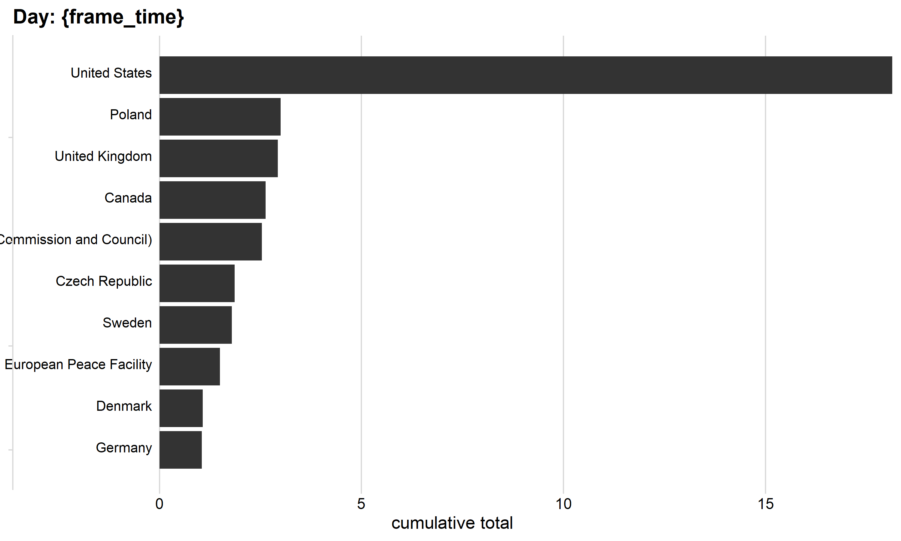

Code
#start
aid_data_csv <- read_csv(here('data_raw', 'World Wide Aid.csv')) %>%
clean_names()
# glimpse(aid_data_csv)
aid_csv <- aid_data_csv %>%
select(countries, announcement_date, total) %>%
mutate(total = parse_number(total),
date = mdy(announcement_date)) %>%
filter(!is.na(date) & !is.na(total)) %>%
mutate(aid_inter = date - min(date)) %>%
select(-announcement_date)
aid_csv#> # A tibble: 805 × 4
#> countries total date aid_inter
#> <chr> <dbl> <date> <drtn>
#> 1 Australia 35000000 2022-03-01 34 days
#> 2 Australia 32600000 2022-03-20 53 days
#> 3 Australia 12000000 2022-03-20 53 days
#> 4 Australia 27000000 2022-10-25 272 days
#> 5 Australia 10000000 2023-06-26 516 days
#> 6 Australia 70000000 2022-03-01 34 days
#> 7 Australia 21000000 2022-03-20 53 days
#> 8 Australia 25000000 2022-03-31 64 days
#> 9 Australia 49000000 2022-04-08 72 days
#> 10 Australia 26500000 2022-04-08 72 days
#> # ℹ 795 more rowsCode
aid_group <- aid_csv %>%
select(-aid_inter) %>%
complete(countries, date = seq(min(date), max(date), by = "1 day")) %>%
mutate(total = replace_na(total, 0)) %>%
group_by(countries) %>%
arrange(countries, date) %>%
fill(total, .direction = 'down') %>%
mutate(cuml_tot = cumsum(total)) %>%
ungroup() %>%
group_by(date) %>%
mutate(
rank = rank(-cuml_tot, ties.method = "first"),
val_lbl = paste0(" ", round(cuml_tot / 10^6))
) %>%
filter(rank <= 10) %>%
ungroup() %>%
mutate(war_day = as.integer(date - min(date)))
aid_group#> # A tibble: 8,200 × 7
#> countries date total cuml_tot rank val_lbl war_day
#> <chr> <date> <dbl> <dbl> <int> <chr> <int>
#> 1 Australia 2022-01-26 0 0 5 " 0" 0
#> 2 Australia 2022-01-27 0 0 2 " 0" 1
#> 3 Australia 2022-01-28 0 0 2 " 0" 2
#> 4 Australia 2022-01-29 0 0 2 " 0" 3
#> 5 Australia 2022-01-30 0 0 2 " 0" 4
#> 6 Australia 2022-01-31 0 0 2 " 0" 5
#> 7 Australia 2022-02-01 0 0 6 " 0" 6
#> 8 Australia 2022-02-02 0 0 3 " 0" 7
#> 9 Australia 2022-02-03 0 0 3 " 0" 8
#> 10 Australia 2022-02-04 0 0 3 " 0" 9
#> # ℹ 8,190 more rowsCode
aid_group_plot <- aid_group %>%
ggplot(aes(x = rank, group = countries)) +
geom_tile(aes(y = cuml_tot / 2, height = cuml_tot), width = 0.9) +
geom_text(aes(y = 0, label = paste(countries, " ")), vjust = 0.2, hjust = 1) +
coord_flip() +
theme_minimal_vgrid() +
transition_time(war_day) +
view_follow(fixed_x = TRUE) +
labs(
x = "cumulative total",
title = "Day: {frame_time}"
)
aid_group_plot 
Code
aid_data <- read_xlsx(here('data_raw', 'world_wide_aid_2.xlsx'), sheet = "Bilateral Assistance, MAIN DATA", range = cell_cols("A:T")) %>%
tibble() %>%
clean_names() %>%
rename(val_dlvrd_usd = value_delivered_own_estimate_in_usd) %>%
rename(val_cmtd_usd = value_committed_own_estimate_in_usd) %>%
mutate(amt_dlvrd_usd = as.numeric(val_dlvrd_usd),
amt_cmtd_usd = as.numeric(val_cmtd_usd))
glimpse(aid_data)#> Rows: 2,279
#> Columns: 22
#> $ id <chr> "AUH1", "AUH2", "AUH3", "AU…
#> $ countries <chr> "Australia", "Australia", "…
#> $ announcement_date <chr> "44621", "44640", "44640", …
#> $ type_of_aid_general <chr> "Humanitarian", "Humanitari…
#> $ type_of_aid_specific <chr> "Assistance", "Equipment", …
#> $ explanation <chr> "Australia has committed im…
#> $ original_currency <chr> "AUD", "AUD", "AUD", "AUD",…
#> $ monetary_value_as_given_by_source <chr> "35000000", "32600000", "12…
#> $ items <chr> ".", "ton of coal", ".", ".…
#> $ type_of_item <chr> ".", "Humanitarian", ".", "…
#> $ sub_type_of_item <chr> ".", "Humanitarian", ".", "…
#> $ soviet_origin_1 <dbl> 0, 0, 0, 0, 0, 0, 0, 0, 0, …
#> $ no_of_units <chr> ".", "70000", ".", ".", "."…
#> $ no_of_units_delivered_in_kind_military_aid <chr> ".", "undisclosed", ".", ".…
#> $ unit_price_in_usd <chr> ".", "329", ".", ".", ".", …
#> $ val_cmtd_usd <chr> ".", "23030000", ".", ".", …
#> $ val_dlvrd_usd <chr> ".", ".", ".", ".", ".", ".…
#> $ total <chr> "35000000", "32600000", "12…
#> $ converted_value_in_eur <chr> "21311575.229860559", "1985…
#> $ total_monetary_value_delivered_in_eur <chr> ".", ".", ".", ".", ".", ".…
#> $ amt_dlvrd_usd <dbl> NA, NA, NA, NA, NA, NA, NA,…
#> $ amt_cmtd_usd <dbl> NA, 23030000, NA, NA, NA, N…Code
aid2 <- aid_data %>%
filter(!is.na(amt_cmtd_usd)) %>%
filter(type_of_aid_general == "Military") %>%
group_by(countries) %>%
summarize(total_by_country = sum(amt_cmtd_usd))
top_categories <- aid2 %>%
arrange(desc(total_by_country)) %>%
top_n(5, wt = total_by_country) %>%
pull(countries)
aid2 <- aid2 %>%
mutate(countries = fct_other(countries, keep = top_categories, other_level = "Other"))
aid2_plot <- aid2 %>%
ggplot() +
geom_col(
aes(
x = total_by_country / 10^9,
y = reorder(countries, total_by_country)
)) +
labs(
x = "Total Military Aid Commited (Billions of $)",
y = "",
title = "Committed Foreign Military Aid to Ukraine",
subtitle = "Top 10 Countries"
) +
theme_bw()
aid2_plot
Code
#end